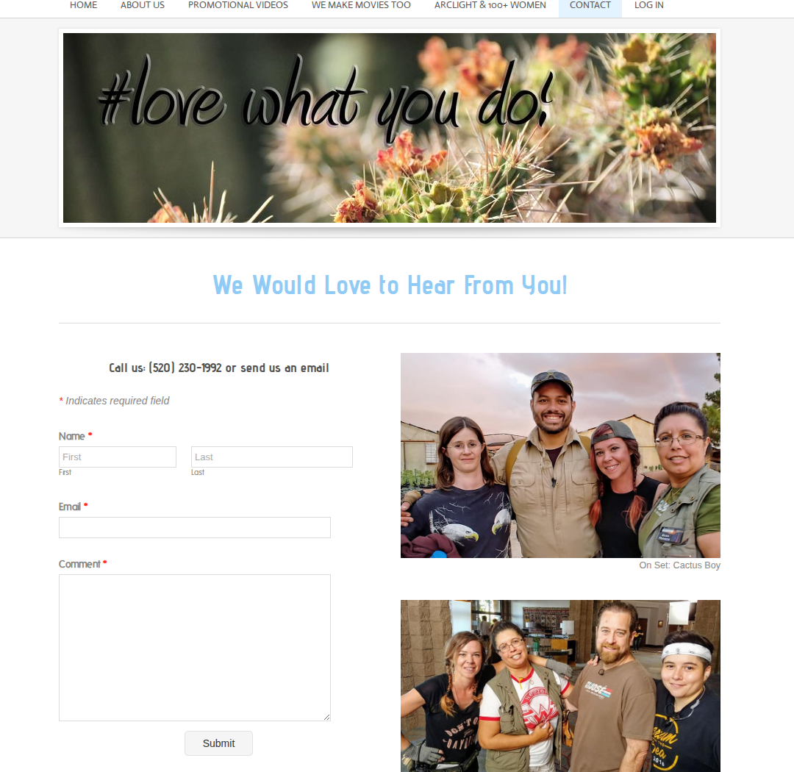
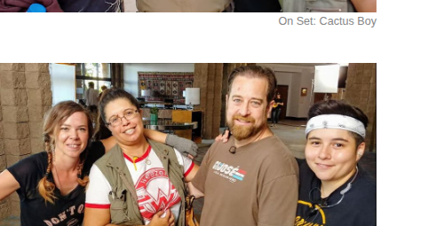

Southern Arizona roots. Client-first production.
ArcLight Pictures is led by Elisa Cota-Francis and Bobby Francis, a Tucson-based production team bringing decades of combined experience across film, video, television, sound, cinematography, editing, and post.
Producer, director, editor, writer, and sound specialist.
Elisa’s family roots in Southern Arizona run deep, and that regional connection shows up in how ArcLight works: careful storytelling, respect for subjects, and a strong sense of place. She studied film and television production at the University of Arizona and developed in real-world production environments through Arizona Public Media and documentary work.
Over time she built an especially strong background in audio and sound mixing while also expanding into producing, directing, editing, writing, and full production leadership. ArcLight’s story-first tone and client care both trace back to that foundation.


Cinematography, editing, animation, visual effects, and field production.
Bobby Francis grew up in a military family, developed an early pull toward art and technology, and later built his career through animation, editing, cinematography, and post. His background includes work at local production houses and high-end graphics and compositing work at Raytheon Missile Systems before launching ArcLight Pictures with Elisa.
That mix of visual storytelling, technical depth, and on-set experience is why ArcLight can handle both polished marketing pieces and more complex film-support roles.
Film look, practical workflow, and a team that can scale with the project.
ArcLight sits in a useful middle ground: cinematic enough to give a brand or story real visual weight, practical enough to meet budget and timeline constraints, and experienced enough to work across promotional videos, event coverage, documentary storytelling, and film-support roles.
40+ years combined
Across film, video, television, and sound production.
Southern Arizona grounded
Tucson knowledge, regional context, and on-location production familiarity.
Client-first approach
ArcLight’s public site is clear about this: the work starts with what the client actually needs.
Flexible scope
From promotional videos and event recaps to film crew roles and post-production support.
ArcLight has also been part of the conversation around bringing film work back to Southern Arizona.
Public reporting around the Arizona and Tucson-area production economy has featured ArcLight’s perspective on local hiring, regional impact, and the value of keeping production dollars moving through Southern Arizona crews and businesses.